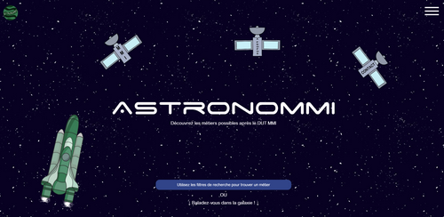
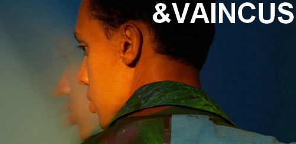
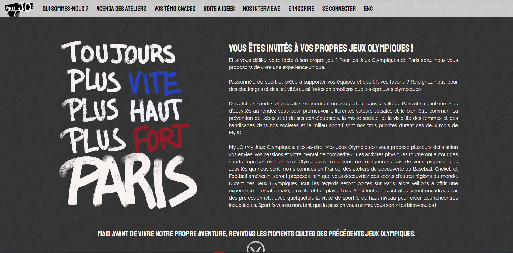
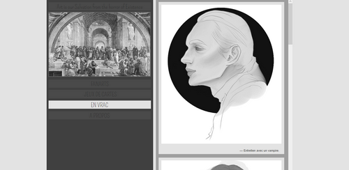
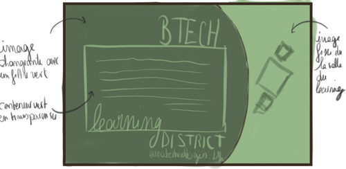

Mes expériences autour du numérique
Graphiste principale pour AstronoMMI

Projet tutoré, première année DUT MMI

AstronoMMI a été mon projet tutoré de première année. Le projet s'éallait sur quatre mois et l'objectif de notre groupe était un site permettant aux étudiants, que nous sommes et au prochains à venir, de découvrir toute les différentes voies et métiers qui s'offrent à eux après notre dîplome. C'était vraiment l'idée d'une aventure dans les différents secteurs professionnels que nous voulions offrir à nos visiteurs. Et c'est par le biais de la découverte spaciale que nous proposons aux étudiants d'explorer les différents cursus qui s'offrent à eux. En tabt que graphiste en chef, mon objectif principal était de créer plus qu'une simple charte graphique mais un univers très colorés et graphique. Les difficultés rencontrées sont principalement le doute constant en ce qui concerne mes travaux graphiques. J'ai compris par cette expérience que le graphisme me plaît comme activité, mais j'ai besoin de toucher à du code, à du front en particulier. Notre système, dans le groupe, était de chacune avoir un rôle presque profesionnel. Etant dans l'équipe des graphistes, ne pas toucher au développement m'a quelque peu ennuyée et je sais que je ne ferais plus cette erreur. Quand bien même je m'occuperais du graphisme, dans le futur, j'espère avoir un poste plus polyvalent.
Développeuse full-stack pour Seuls & Vaincus
Projet Lyrics, projet d'étude, première année DUT MMI.

Jusqu'à présent, je n'ai que rarement eu à m'imposer des contraintes concernant le visuel d'un site. J'arrivais souvent à penser le design en accord avec le fond du site. Cette fois-ci pour ce projet-là, la tâche a été un peu plus rude. Le projet lyrics est un projet web basé sur une chanson, aléatoirement attribuée. Pour ma part, je suis tombée sur la chanson de Gaël Faye : Seuls et Vaincus. La chanson n'étiat pas pour me déplaire bien que j'ai eu beaucoup de problème à me baser sur cette dernière pour m'inspirer du design du site web qui contiendrait les paroles de celle-ci. L'idée de base est que le site reflète les paroles, l'atmosphère. Toutefois, seuls et vaincus, est une chanson presque politique, très engagée et qui peut-être très dure dans les mots choisis. Ce qui m'a quelque peu complexifié la tâche. Ce que j'en tire de cette expérience, c'est que le design, tout comme le fond d'un site, doit être recherché. Les idées ne viennent pas toujours d'elles-même et parfois, il faut juste accepter, de prendre le temps de s'imprégner de différents visuels, différents médias pour trouver de l'inspiration.
Développeuse full-stack pour myJO
Projet externe, Hackathon 2021, première année DUT MMI.
 
Le 4 février 2021 au soir débuté le CITY Hackathon, porté par l'Université Gustave Eiffel. Les prochains jeux olympiques parisiens étaient mis à l'honneur. Et le défi d'inventer et créer un projet autour de cette thématique nous était lancé. C'est avec un binôme que nous avons monté l'idée de MyJO. Une organisation qui promeut le sport dans un contexte de cohésion sociale et internationale. Nous avions 3 jours pour tout mettre en oeuvre avant de présenter notre projet. Et cette expérience a été assez redoutable. Jusqu'à présent, je n'avais jamais travaillé sous pression, seule. Mon binôme étant plus portée sur la communication, j'ai été en charge du site vitrine de notre projet. J'ai appris à gérer mon temps, mon stress ainsi que celui de mon binôme. J'ai eu à travailler dans des conditions assez particulière qui plus est avec la crise sanitaire. L'énergie que peut apporté un évènement comme cet hackathon est tout autre lorsqu'on le vit depuis chez soi. Le rendu final n'était pas exactement ce que j'aurais aimé qu'il soit, mais avec du recul, je considère qu'il m'aurait été difficile de faire mieux en considérant la charge de travail que demander l'idée de projet, ainsi que mes compétences à ce moment-là.
Développeuse full-stack pour Mon Portfolio
Projet personnel
 
A la suite de mon stage initiatique au web chez Btech, j'ai été tenté de créer mon propre site web que je comptais utilisé de manière régulière comme portfolio. Cette fois-ci l'expérience était bien différente, le travail seul sur un projet entier ne m'a pas effrayé bien qu'il y avait moins d'engouement à l'idée de travailler dessus sans l'esprit d'équipe. Toutefois, j'ai réussi à respecter les temps que je m'étais impartie et le travail a finalement été fait sans trop de concession au vu de mon idée initiale. J'ai appris à mettre en place quelques habitudes d'auto-discipline pour travailler sur un site qui ne m'était pas demandé par qui que ce soit, que ça soit un formateur ou un professeur. Je le faisais uniquement pour moi et pour challenger mes compétences.
Graphiste principale pour BTech
Projet de la 21ème promotion de la formation BTech
 
C'était ma toute première expérience dans le web. J'étais entouré de quatre novices dans le développement web et au cours de notre stage initiatique au développement, nous avons eu à travailler tous ensemble à la manière d'une vraie équipe. C'est aussi une première expérience de travail d'équipe pour moi. Il n'y avait pas vraiment de structures comme en projet tutoré mais nous avions eu l'intelligence de prendre en charge le travail qu'on se sentait de faire. J'ai pris de manière assez naturel le poste de graphiste et mes premiers wireframes me semblent aujourd'hui n'être que des brouillons ! Il n'empêche que ça a été une expérience enrichissante et très positive !